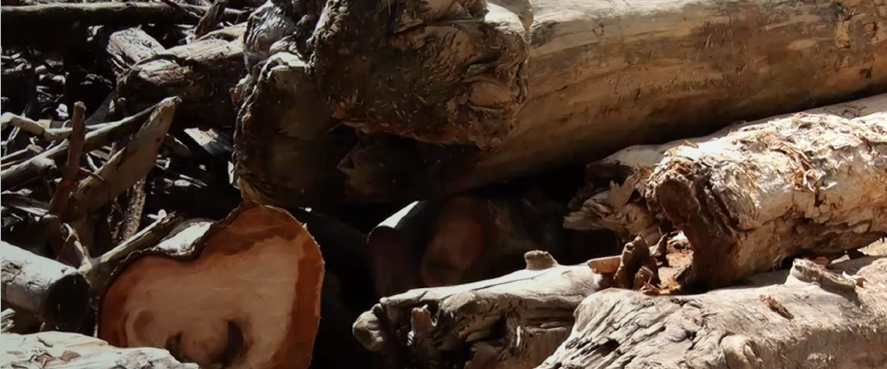
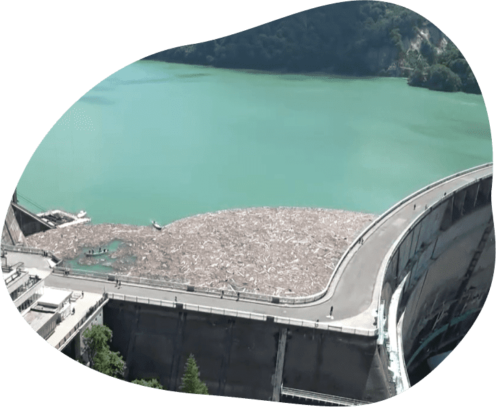
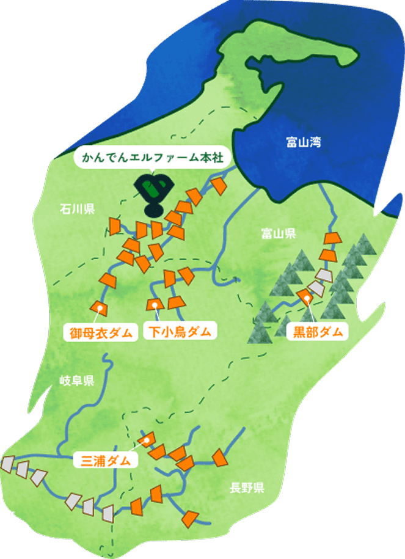

エルファームが行う流木の再生について
流木再生
流木アップサイクルの
最前線
富山県は急峻な地形と急流河川が多く、
水力発電が盛んな地域です。
しかし、大雨や台風、雪崩などにより
山々から大量の倒木が発生し、
流木となって河川へ流れ込みます。
資源として有効活用できないか？
その想いから、かんでんエルファームは誕生しました。
流木と発電の意外な関係

ダムにはせき止めておいた水を発電所の送るための取水口があります。一度にたくさんの流木が漂着すると、水力発電所の取水口がふさがってしまい、うまく発電することができなくなってしまうため、流木の引き上げ作業が必要となります。
流木の引き上げから
加工まで
流木の引き上げ
流木の引き揚げ作業は、ダムの水位が上がる春頃まで始めることができません。
そのため、黒部ダムでは限られた期間の中で、年に一度、約1ヶ月間で引き揚げを行っています。
年間で約300tの流木を引き上げています。
大型トラック運搬による運搬作業
引き上げられた流木を回収・運搬するため、大型トラックで大町市から関電トンネルを通り、黒部ダムまで向かいます。
大量の流木を安全に工場まで届けるため、
熟練の運転技術と集中力が不可欠です。
流木を資源に
富山県南砺市の工場では、約200km運ばれてきた流木を、重機と人の手を組み合わせて効率的かつ丁寧に分別しています。流木、落葉や小枝、さらには小さなゴミまで、用途に応じて分類されていきます。
流木は宝の山
加工された流木は、チップやおが粉となり、バイオマス発電の燃料や、木のぬくもりを感じるグッズへと生まれ変わります。こうした取り組みが、社会や環境への優しい未来を形づくっています。
関電ダム流木の約半分を担う
”流木のプロフェッショナル”

エルファームでは、黒部ダムに限らず関電ダム全体で発生する流木の約５０％を受け入れ、運搬から加工まで一貫して対応しています。
流木だけでなく、伐採木や剪定枝なども貴重な地域資源のひとつ。
私たちエルファームはこうした多様な木材を余すことなく再利用し、地域に還る環境づくりに取り組んでいます。